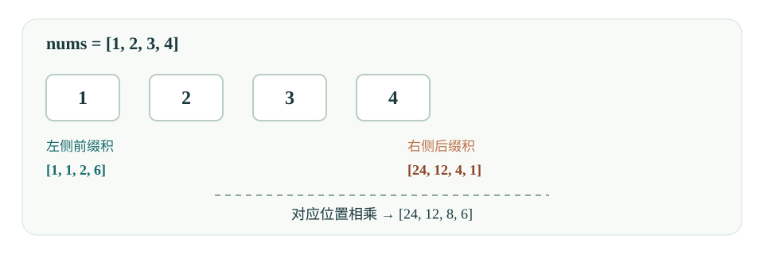
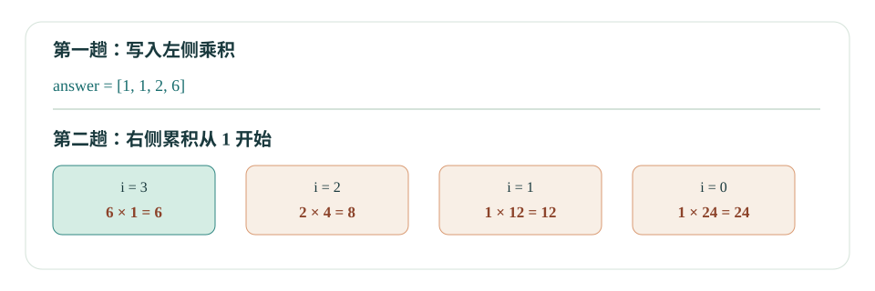
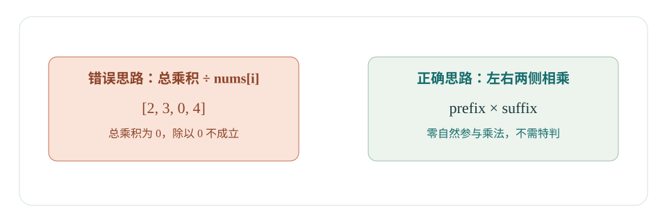

LeetCode 238 · 除自身以外数组的乘积
左右两侧各走一遍，不需要除法，也不需要两张辅助表。
中等 Medium16 分钟Prefix / Suffix01 · 问题的关键是“排除自己”
给定数组 nums，构造 answer，使 answer[i] 等于数组中除 nums[i] 之外所有元素的乘积。题目要求 O(n) 时间且不能使用除法；后续还要求把额外空间压缩到 O(1)，返回的答案数组不计入额外空间。
对 nums = [1,2,3,4]，位置 2 的答案是 1 × 2 × 4 = 8。它自然分成“左边所有数的乘积”与“右边所有数的乘积”。

02 · 前缀与后缀：把一个大问题拆成两份
定义 left[i] 为 nums[i] 左侧所有元素的乘积；right[i] 为 nums[i] 右侧所有元素的乘积。那么 answer[i] = left[i] × right[i]。
- 左侧为空时乘积按乘法单位元定义为 1，因此 left[0] = 1。
- 右侧为空时同样为 1，因此 right[n−1] = 1。
- 左侧乘积可以从左到右累计；右侧乘积可以从右到左累计。
不必保存两张完整的 left 和 right 数组。先把左侧累计写进 answer，再用一个 suffix 变量从右向左乘进去即可。
03 · 两趟扫描如何合并？
第一趟只写左侧乘积。第二趟维护一个从右向左增长的 suffix，将它乘到 answer[i] 上。交互轨迹展示两趟之间的状态切换。

左到右：answer[0] 写入空前缀乘积 1；prefix 更新为 1。
prefix=1 · answer=[1,1,1,1]
04 · 正确性证明
第一趟结束后，对每个 i，answer[i] 等于 nums[0] 到 nums[i−1] 的乘积：i=0 时为空前缀，值为 1；每轮结束后 prefix 再乘上 nums[i]，因此下一位置得到正确前缀。
第二趟从右向左。处理 i 时，suffix 恰好等于 nums[i+1] 到 nums[n−1] 的乘积。于是 answer[i] 被更新为左侧乘积 × 右侧乘积，恰好覆盖所有 j ≠ i 的元素。更新后再把 nums[i] 乘入 suffix，供 i−1 使用。归纳可知所有位置都正确。
05 · 代码：输出数组兼任前缀表
class Solution:
def productExceptSelf(self, nums: list[int]) -> list[int]:
n = len(nums)
answer = [1] * n
prefix = 1
for i in range(n):
answer[i] = prefix
prefix *= nums[i]
suffix = 1
for i in range(n - 1, -1, -1):
answer[i] *= suffix
suffix *= nums[i]
return answer
| 维度 | 结论 | 说明 |
|---|---|---|
| 时间 | O(n) | 两次线性扫描，每个元素常数次乘法。 |
| 额外辅助空间 | O(1) | 除输出 answer 外只使用 prefix、suffix 和循环变量。 |
| 输出空间 | O(n) | 返回数组本身需要 n 个位置；题目 follow-up 不把它计入额外空间。 |
| 输入修改 | 不修改 | 累计值写入 answer，不覆盖 nums。 |
06 · 零值、除法与常见误区
不能用“总乘积除以 nums[i]”替代。题目明确禁止除法，而且只要数组中出现零，总乘积就变成零，无法通过除法恢复所有位置的答案。前后缀乘积不需要为零做特殊分支：零会自然地影响它所在一侧的乘积。

- 把前缀定义成“包含当前元素”会多乘一次 nums[i]；这里必须是严格左侧。
- 反向扫描时先乘 suffix，再更新 suffix；顺序不能颠倒。
- O(1) 辅助空间不等于总空间 O(1)：返回数组仍然是 O(n)。